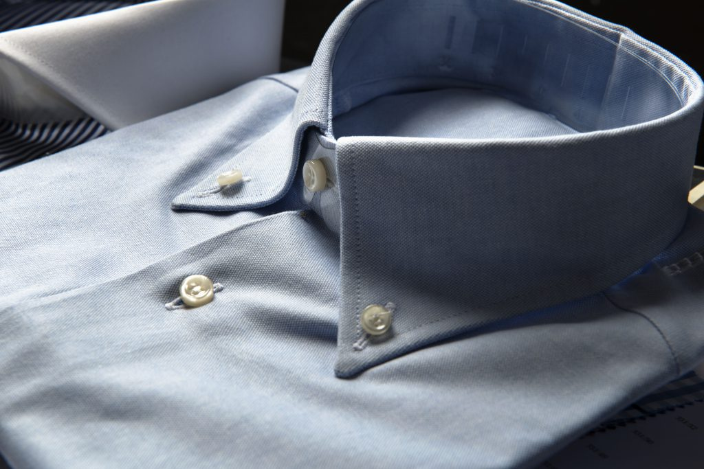

Shirts
Our customised shirts are created with the same technique as the bespoke suit. We make shirts for your work, your free time and for special occasions. We can utilise both hand or sewing machine stitches. All our shirts distinguish themselves for their accessories and fabrics: it is possible to choose the making of the collars and cuffs, hand sewn or glued. Shirts are made with Italian fabrics selected by expert artisans.
Time of production: 4 weeks.